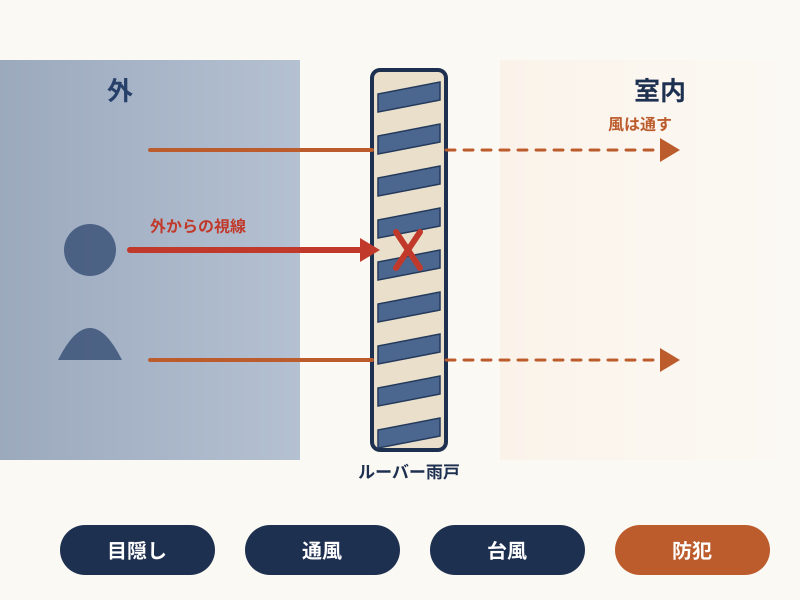
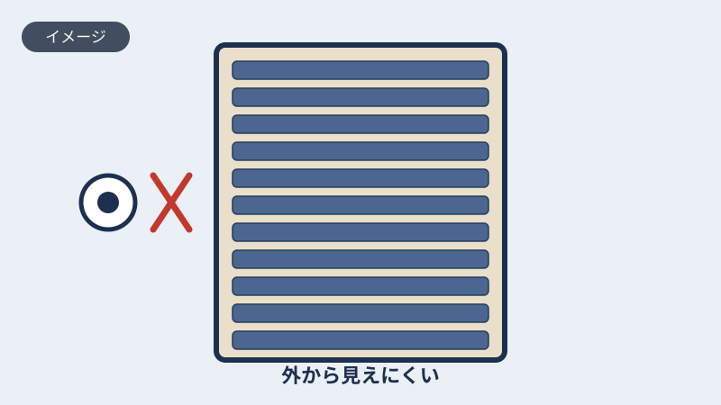
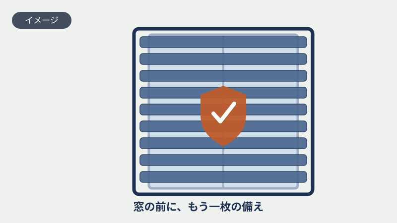
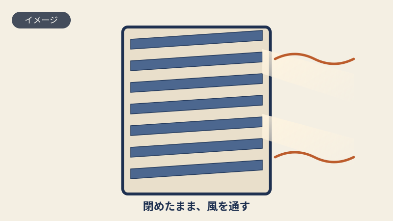
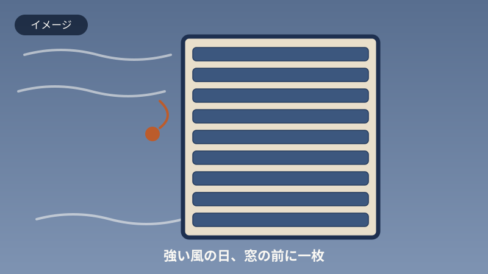
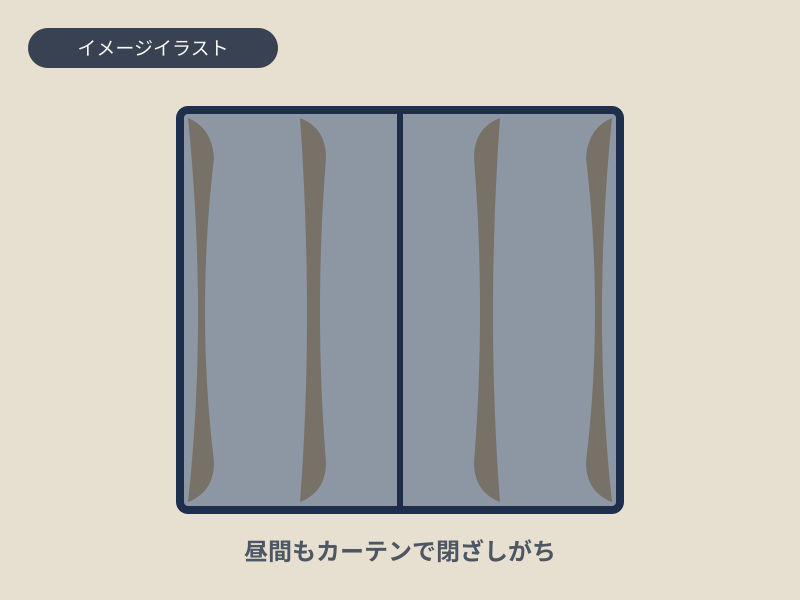
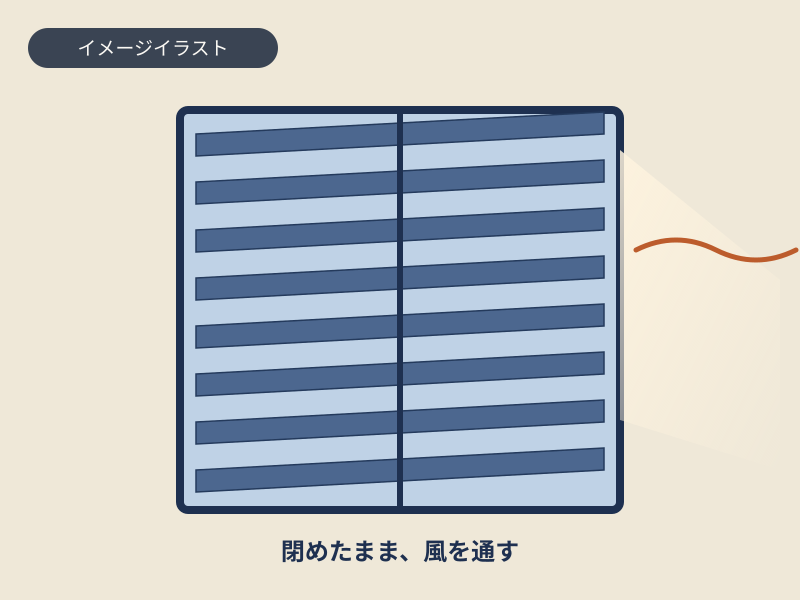

この記事の内容（タップで開く）
こんな窓の不安、ありませんか
道路に面した1階の窓。日中も、なんとなくカーテンを閉めたままにしていませんか。風を通したいのに、開けると外から中が見えてしまう。だから閉めておく。お部屋は少し暗いままです。
声を上げて困るほどではありません。だから、ずっと後回しになります。でも、こういう小さな不便や不安は、たいてい同じところから来ています。
- 道路に面した窓は、昼間もカーテンを閉めっぱなしにしている
- 窓を開けて風を入れたいけれど、外から中が見えるのが気になる
- 夜、寝室の窓を少し開けて寝たいが、戸締まりが不安で開けられない
- 留守がちで、窓まわりの防犯がなんとなく心配
- 今の窓には、雨戸もシャッターも付いていない
人目が気になる、戸締まりが不安、でも風は通したい。別々のことのようでいて、根っこは1階の窓という同じ場所に集まっています。次は、なぜそうなるのかをお話しします。
なぜ1階の窓は、人目と戸締まりが気になるのか
1階の窓は、外を歩く人の目線とちょうど同じ高さにあります。だから中が見えやすく、人目が気になります。同じ理由で、外から手が届きやすい場所でもあります。1階の窓まわりが気になるのは、自然なことです。
では隠せばいいかというと、ここにジレンマがあります。カーテンを閉めれば人目はさえぎれますが、昼間も暗く、風も通りません。普通の雨戸を閉めれば真っ暗で、やはり風は止まります。隠すと閉ざしてしまう。これが今までの窓まわりでした。

この閉めたまま風を通すという考え方を形にしたのが、これからご紹介するエコ引違い雨戸です。
エコ引違い雨戸とは
エコ引違い雨戸は、羽根（ルーバー）の開け閉めで、閉めたまま風を取り込める雨戸です。横にスライドして開けることもでき、網戸も付いています。今の窓に雨戸やシャッターが付いていなくても、後から取り付けられる場合が多い商品です。
使い方はシンプルです。人目が気になる昼間は、雨戸を閉めたまま羽根を開けておく。外からは中が見えにくく、それでいて風は通ってきます。光の入り方は羽根の角度で調整できます。夜や留守のときはしっかり閉める。窓の前にもう一枚あることが、戸締まりの安心にもつながります。一定の台風対策にもなります。
1階の窓に向いているのも、この雨戸の特長です。横にスライドして開けられるので、いざというときの避難経路としても使えます。窓の構造によっては取り付けに向き不向きがありますので、そこは写真を見せていただければお調べします。
付けると変わること
エコ引違い雨戸の良いところは、ひとつの工事で、人目・防犯・通風・台風の備えが、まとめて一段ずつ良くなることです。

外から、見えにくくなる
羽根を閉じれば、外を歩く人の目線から室内が見えにくくなります。カーテンを一日中閉める暮らしから、すこし解放されます。

窓の前に、もう一枚の備え
窓ガラスの前に雨戸があることで、外から窓へ近づきにくくなります。ある程度の防犯対策として、夜や留守のときの安心につながります。

閉めたまま、風を通す
羽根を開ければ、雨戸を閉めたままでも風が通ります。網戸も付いているので、虫を気にせず窓を開けやすくなります。光の入り方も羽根の角度で調整できます。

強い風の日も、窓の前に一枚
雨戸を閉めれば、強い風や飛んでくるものから窓の前を守る、一定の台風対策になります。九州は台風の多い地域です。
いずれも、窓やお住まいの状況によって効果の感じ方は変わります。「ある程度」「一定の」という言い方をしているのは、誇張せず正直にお伝えするためです。
エコ面格子との選び方
羽根で風を通せる商品には、エコ引違い雨戸のほかに、エコ面格子があります。どちらも同じ不二サッシの商品で、羽根の開け閉めで風を入れられる点は同じです。違いは、開け方と取り付ける場所です。
| エコ引違い雨戸 | エコ面格子 | |
|---|---|---|
| 開け方 | 横にスライドして開けられる | 固定式（羽根の開閉で通風） |
| 網戸 | 付いている | ― |
| 光の入り方 | 四方を枠で囲うため入りにくい | 壁から離して付けるため入りやすい |
| 向いている階 | 1階におすすめ | 2階におすすめ |
| 避難経路 | 横に開けて出られる | 固定のため不向き |
1階の窓には、横にスライドして開けられて避難経路にもなるエコ引違い雨戸が向いています。2階の窓には、すっきり付くエコ面格子が向いています。光をしっかり採りたい窓なら、光が入りやすいエコ面格子という選び方もあります。どちらが合うかは、窓の場所と使い方しだいです。迷ったら、写真を見せていただければご提案します。
こんな窓に向いています
どんな窓に向いているのか、よくご相談いただく場面を挙げます。あてはまる窓があれば、お気軽にLINEで写真をお送りください。


道路に面した1階の窓
歩く人の目線と同じ高さにある窓です。昼間もカーテンを閉めがちだったお部屋に取り付けると、閉めたまま風を入れられるようになります。横にスライドして開けられるので、避難経路としても使えます。
雨戸もシャッターも付いていない窓
新しめのお宅で、はじめから雨戸が付いていない窓は多くあります。エコ引違い雨戸は、こうした窓に後から取り付けられる場合が多い商品です。窓の構造によって向き不向きがあるため、まず写真で確認します。
お客様の声
エコ引違い雨戸をお使いの方からいただいた声を、許諾を確認のうえ掲載していきます。
（エコ引違い雨戸をご利用のお客様の声を、許諾を確認のうえ収集中です。実際にいただいた声のみを掲載します。創作はしません。）
掲載する声は、いずれもお客様個人の感想です。効果には個人差があり、結果を保証するものではありません。掲載は許諾と日付を確認のうえ確定します。
フクシマ建材が選ばれる理由
窓・内窓・玄関ドア・雨戸まわりのリフォームを、九州一円で施工しています。今の窓に何が付けられるのか、どれが合うのかを、専門用語をかみくだいて、分かりやすく丁寧にご説明するのが私たちのやり方です。むやみに高い工事をおすすめすることはありません。
費用のこと
エコ引違い雨戸の費用は、窓の大きさや枚数、取り付ける窓の状況によって変わります。同じ「窓」でも、サイズや位置で必要な工事が違うためです。
このページでは、あえて金額の目安を大きくは書いていません。実際よりも安く見えたり高く見えたりして、かえって分かりにくくなるからです。気になる窓の写真を送っていただければ、その窓に合わせたおおよその費用を、正直な数字でお返事します。
相談から施工までの流れ
LINEで写真を送る
気になる窓の写真を送ってください。入力フォームは不要です。
取り付けの可否と概算をお返事
写真をもとに、取り付けられそうか、おおよその費用、合いそうな商品をお伝えします。
現地調査・お見積もり
ご希望があれば、実際の窓を見て正確なお見積もりをお出しします。無理な営業はしません。
施工
窓の状況に合わせて取り付けます。工事にかかる時間も、事前にお伝えします。
よくあるご質問
雨戸を閉めると、部屋は真っ暗になりませんか
羽根（ルーバー）を開けておけば、雨戸を閉めたままでも風が通り、光もいくらか入ります。普通の雨戸を閉めたときのような真っ暗にはなりません。ただし、雨戸のない窓ほど明るくはなりません。光をたっぷり採りたい場合は、光が入りやすいエコ面格子もあわせてご提案します。
防犯にはどのくらい効果がありますか
窓の前に雨戸が一枚あることで、外から窓へ近づきにくくなります。ある程度の防犯対策とお考えください。侵入を必ず防ぐといった性質のものではありませんので、効果を誇張せず正直にお伝えしています。
今ある窓に後付けできますか
雨戸やシャッターが付いていない窓にも、後から取り付けられる場合が多い商品です。ただし窓の構造によって向き不向きがあります。窓の写真を送っていただければ、取り付けられそうかをお調べしてお返事します。
1階と2階、どちらにも付けられますか
1階には、横にスライドして開けられて避難経路にもなるエコ引違い雨戸が向いています。2階には、すっきり付くエコ面格子が向いています。窓の場所と使い方によってご提案します。
台風のときは役に立ちますか
雨戸を閉めることで、強い風や飛んでくるものから窓の前を守る、一定の台風対策になります。地域や台風の規模によって変わりますので、こちらも誇張せずお伝えします。
網戸は付いていますか。見積もりは無料ですか
網戸は付いています。お見積もりは無料です。ご予算やご希望をうかがったうえで、必要な分だけをご提案します。むやみに高い工事をおすすめすることはありません。
LINE登録すると、しつこく連絡が来ませんか
確認なくこちらからお電話することはありません。やり取りはLINEの中だけで、営業の連絡を重ねることもしません。合わないと感じたら、いつでもブロック・退会していただけます。まずは見るだけ、という方も歓迎です。
フクシマ建材について
窓・内窓・玄関ドア・雨戸まわりのリフォームを専門に、九州一円で施工しています。理念は、分かりやすく、丁寧に。お客様のお困りごとを、専門外の方にも伝わる言葉で解決することを大切にしています。
九州プラスト（フクシマ建材株式会社）
閉めても、風は通したい。
その願いを、一枚の雨戸で。
うちの窓に付けられるのかな、という段階で大丈夫です。
写真を1枚送っていただくところから、はじめられます。